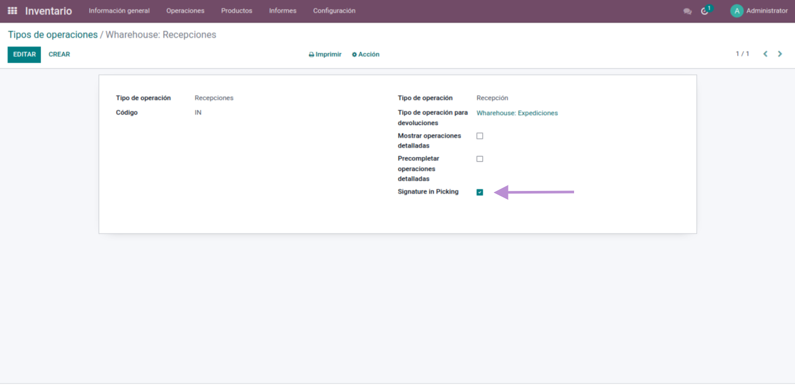
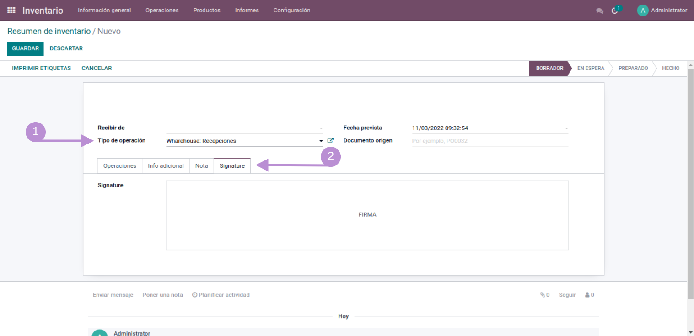
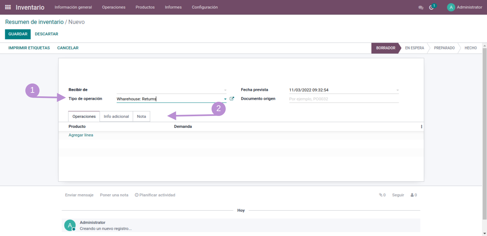
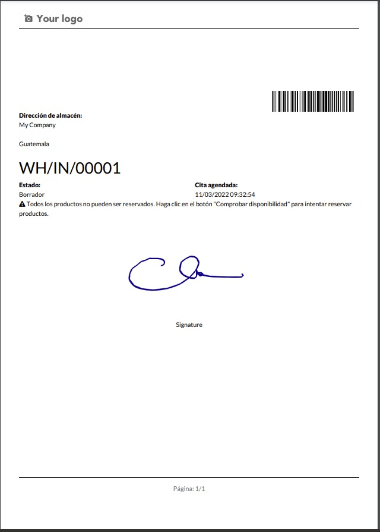

You can sign your orders to have tracking control and responsibility
Validate the signature in the type of operation
Sign your stock picking with the type of operation previously validated to sign.
If the type of operation was not validated to sign, the signature option will not appear.
Print your stock picking operation to verify the signature.
